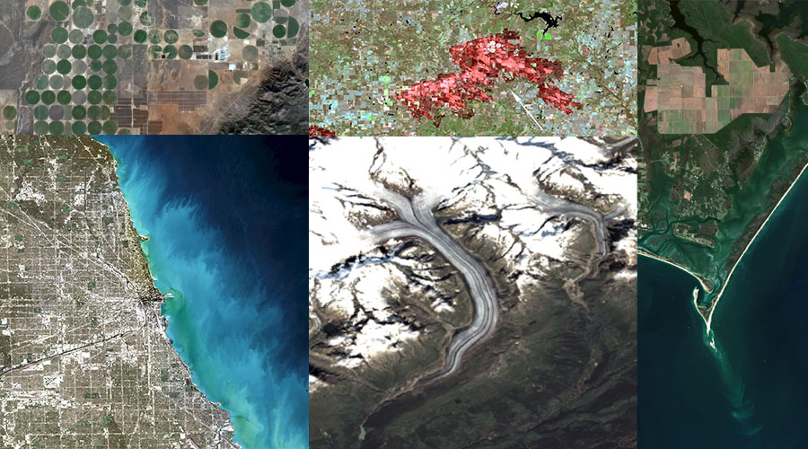

2022 LP DAAC UWG Breakout Session
Finding, accessing & analyzing data hosted in Earthdata Cloud
Welcome

Welcome to the 2022 LP DAAC UWG Breakout Session hosted by NASA’s Land Processes Distributed Activate Archive (LP DAAC) with support from NASA Openscapes.
The workshop will take place in-person (!) on May 26, 2022 from 8:30am - 12:00pm CDT (UTC-5).
Agenda
May 26th, 2022
| Time, CDT (UTC-5) | Event | Leads/Instructors | Reference/Resource |
|---|---|---|---|
| 8:45 am | Welcome / Workshop Expectations | Aaron Friesz & Danielle Golon | |
| 8:50 am | LP DAAC Website Tour | Danielle Golon | |
| 9:20 am | AppEEARS Demo | Danielle Golon | |
| 9:50 am | Earthdata Search Demo | Danielle Golon | |
| 10:15 am | Break/QA | ||
| 10:30 am | Earthdata Cloud - Bulk Download | Aaron Friesz | |
| 10:45 am | Openscapes 2i2c workspace | Aaron Friesz | 2021 Earthdata Cloud Workshop at AGU |
| 10:55 am | Earthdata Cloud - CMR API (Launch) | Aaron Friesz | 2021 Cloud Hackathon |
| 11:20 am | Earthdata Cloud - CMR STAC API (Launch) | Aaron Friesz | 2021 Cloud Hackathon |
| 11:50 am | Break/QA | ||
| 12:05 pm | Intro to xarray (Launch) | Aaron Friesz | 2021 Cloud Hackathon |
| 12:20 am | Earthdata Cloud - COG Data Access (Launch) | Aaron Friesz | 2021 Earthdata Cloud Workshop at AGU |
| 12:35 am | Earthdata Cloud - NetCDF Data Access with Kerchunk (Launch) | Aaron Friesz | Earthdata Cloud Cookbook |
| 12:45 pm | Break/QA/Lunch |
Additional Resources
Acknowledgements
2022 LP DAAC UWG breakout session is hosted by NASA’s LP DAAC with support from the NASA Openscapes Project, with cloud computing infrastructure by 2i2c.